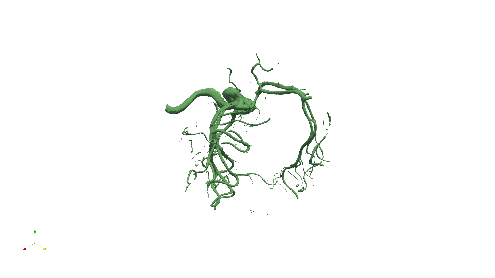

🎯 SciVisAgentBench Evaluation Report
📊 Overall Performance
Overall Score
55.4%
615/1110 Points
Test Cases
32/32
Completed Successfully
Avg Vision Score
63.5%
Visualization Quality
Avg Code Similarity
0.0%
Code Quality Match
PSNR (Scaled)
N/A
Peak SNR (0/32 valid)
SSIM (Scaled)
N/A
Structural Similarity
LPIPS (Scaled)
N/A
Perceptual Distance
Completion Rate
100.0%
Tasks completed
ℹ️ About Scaled Metrics
Scaled metrics account for completion rate to enable fair comparison across different evaluation modes. Formula: PSNRscaled = (completed_cases / total_cases) × avg(PSNR), SSIMscaled = (completed_cases / total_cases) × avg(SSIM), LPIPSscaled = 1.0 - (completed_cases / total_cases) × (1.0 - avg(LPIPS)). Cases with infinite PSNR (perfect match) are excluded from PSNR calculation.
🔧 Configuration
📝 dataset_001
18/35 (51.4%)
📋 Task Description
Clear the ParaView pipeline and load the data file "anonymized_datasets/dataset_001/data/data_001_256x256x256_uint8.raw".
Use visualization tools to determine what object or structure is contained in this dataset. Save the paraview state as "anonymized_datasets/dataset_001/results/{agent_mode}/dataset_001.pvsm"
Provide a textual report identifying what you observe and save it to "anonymized_datasets/dataset_001/results/{agent_mode}/answers.txt"
🖼️ Visualization Comparison
Ground Truth

Agent Result
Image not available📏 Vision Evaluation Rubrics
📝 Text-Based Q&A Evaluation
📊 Detailed Metrics
Visualization Quality
8/10
Output Generation
5/5
Efficiency
5/10
Completed in 131.13 seconds (very slow)
Text Q&A Score
0/10
0.0%
Input Tokens
17,439
Output Tokens
359
Total Tokens
17,798